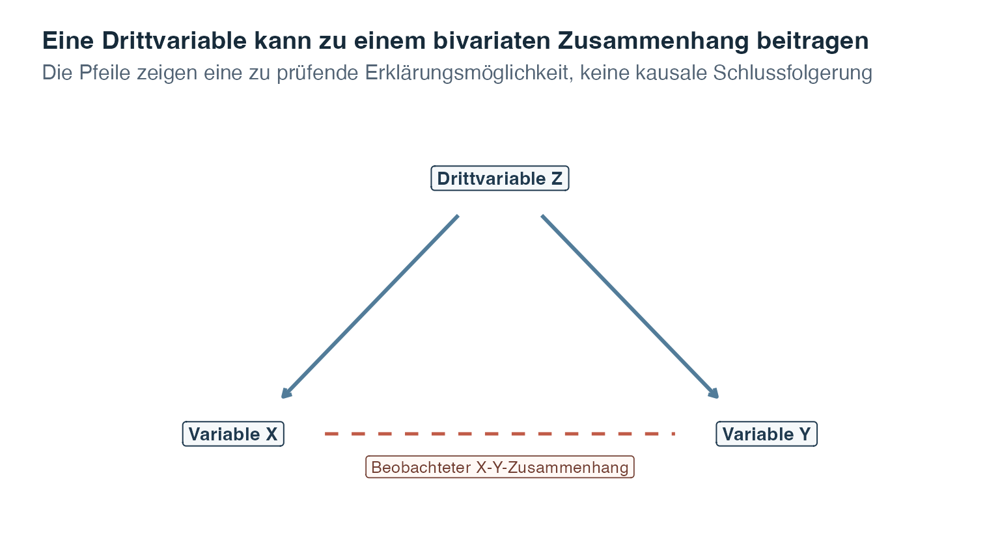
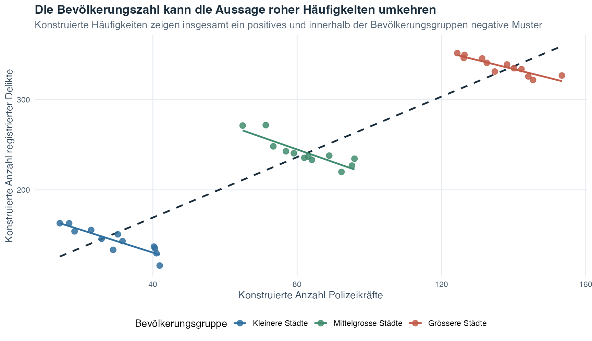
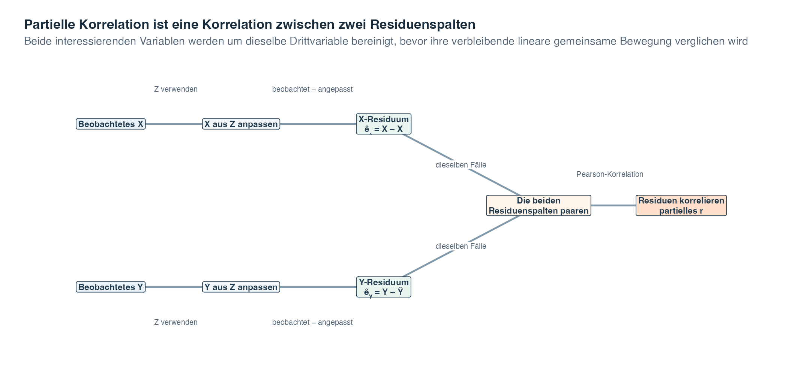
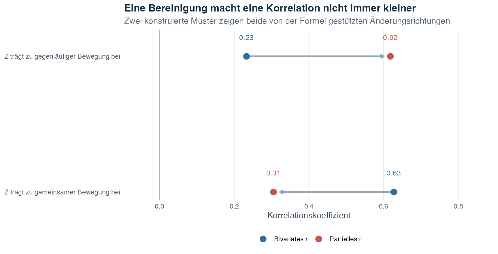

Übungsblatt
Wähle PDF zum Drucken oder Word zum Bearbeiten.
Einführung in die Statistik · Thema 6
Thema 4 führte die bivariate Korrelation ein, also eine Korrelation, die für zwei Variablen berechnet wird. In Thema 5 kam das Residuum hinzu, die Differenz zwischen einem beobachteten Wert und dem von einer Regressionsgeraden angepassten Wert. Die partielle Korrelation verbindet diese beiden Ideen.
Stell dir vor, dass die wöchentliche Übungszeit und ein Punktwert im statistischen Denken gemeinsam ansteigen. Nehmen wir nun an, dass Lernende mit stärkerem Vorwissen tendenziell auch mehr üben und höhere Punktwerte erreichen. Die ursprüngliche Korrelation zwischen zwei Variablen bleibt eine richtige Beschreibung der beobachteten Paare, fasst aber mehrere Wege zusammen. Als Nächstes können wir fragen, ob sich Übungszeit und statistisches Denken noch immer gemeinsam verändern, nachdem ihre linearen Verbindungen mit dem Vorwissen dargestellt wurden.
Nehmen wir an, die Variablen \(X\) und \(Y\) sind korreliert. Eine dritte Variable \(Z\) kann ebenfalls mit beiden zusammenhängen. Die bivariate Korrelation \(r_{XY}\) fasst die gesamte sichtbare lineare gemeinsame Bewegung von \(X\) und \(Y\) zusammen. Dazu gehört auch die Bewegung, die beide Variablen mit \(Z\) teilen. Eine partielle Korrelation stellt eine enger gefasste Frage:
Leitfrage: Wie stark sind \(X\) und \(Y\) linear miteinander verbunden, nachdem der mit \(Z\) verbundene lineare Teil berücksichtigt wurde?
Die Formulierung berücksichtigt wurde ist wichtig. Eine statistische Bereinigung hält \(Z\) nicht physisch konstant, beseitigt keine Ursache und erschafft nachträglich kein Experiment. Sie verwendet ein Modell, um bei jeder gemessenen Variable den mit \(Z\) verbundenen linearen Teil von jenem Teil zu trennen, der durch \(Z\) nicht angepasst wird.
Dieses Thema lässt sich gut als Folge von drei vertrauten Fragen verstehen:
| Frage | Bereits eingeführtes Werkzeug | Was das Werkzeug zeigt |
|---|---|---|
| Bewegen sich \(X\) und \(Y\) in einem geradlinigen Muster gemeinsam? | Pearson-Korrelation aus Thema 4 | Den unbereinigten Zusammenhang zwischen zwei Variablen |
| Welchen Wert von \(X\) oder \(Y\) würde eine aus \(Z\) angepasste Gerade vorhersagen? | Einfache Regression aus Thema 5 | Den durch \(Z\) dargestellten Teil jeder interessierenden Variable |
| Bewegen sich die beiden Teile aus beobachtetem minus angepasstem Wert weiterhin gemeinsam? | Partielle Korrelation in diesem Thema | Den linearen Zusammenhang, der nach der Bereinigung beider Variablen um \(Z\) verbleibt |
Die Zeilen beschreiben keine drei konkurrierenden Analysen. Sie bilden eine zusammenhängende Kette. Zuerst beschreiben wir den ursprünglichen Zusammenhang. Danach machen wir die Bereinigung mithilfe zweier Regressionsgeraden sichtbar. Zum Schluss korrelieren wir, was übrig bleibt. Wenn du diese Kette im Blick behältst, wirken die Formeln später auf der Seite deutlich weniger rätselhaft.
Berichte sowohl die ursprüngliche bivariate Korrelation als auch die partielle Korrelation. Ihre Differenz gehört zum Ergebnis, weil sie zeigt, wie sich der numerische Zusammenhang verändert, wenn die gemessene Drittvariable in die Analyse aufgenommen wird.
Nach Abschluss dieses Themas solltest du:
Eine Drittvariable ist ein weiteres gemessenes Merkmal, das helfen kann, den beobachteten Zusammenhang zwischen \(X\) und \(Y\) zu erklären. Stelle sich zum Beispiel vor, dass sowohl \(X\) als auch \(Y\) tendenziell zunehmen, wenn \(Z\) zunimmt. Wenn wir \(Z\) ignorieren, kann diese gemeinsame Bewegung zu einer positiven \(X\)-\(Y\)-Korrelation beitragen.
Eine Scheinkorrelation ist ein scheinbarer Zusammenhang, dessen Interpretation sich verändert, weil eine Drittvariable zum Muster beiträgt. Das Wort scheinbar bedeutet nicht, dass die berechnete Korrelation numerisch falsch ist. Es bedeutet, dass es irreführend wäre, den bivariaten Koeffizienten als vollständige Erklärung zu behandeln.

Das Diagramm zeigt nur eine mögliche Erklärung. Die Richtung könnte stattdessen von \(X\) zu \(Y\), von \(Y\) zu \(X\), in beide Richtungen oder über weitere Variablen verlaufen. Ein Korrelationskoeffizient kann nicht zwischen diesen Möglichkeiten entscheiden.
Lies die Abbildung von oben nach unten. Die beiden durchgezogenen Pfeile sagen aus, dass \(Z\) möglicherweise sowohl zu \(X\) als auch zu \(Y\) beiträgt. Wenn höhere Werte von \(Z\) tendenziell mit höheren Werten beider interessierenden Variablen einhergehen, können \(X\) und \(Y\) gemeinsam zu variieren scheinen, noch bevor ein eigenständiger \(X\)-\(Y\)-Zusammenhang betrachtet wird. Die gestrichelte Verbindung kennzeichnet den Zusammenhang, den wir beobachten und verstehen möchten. Sie ist gestrichelt, weil das Diagramm nicht verrät, welcher Prozess ihn hervorgebracht hat. Die Abbildung ist somit eine Landkarte einer Frage, kein Beweis für einen kausalen Pfad.
Zählwerte aus verschiedenen Städten bieten ein konkretes Beispiel. Grössere Städte haben in der Regel mehr Einwohnerinnen und Einwohner, mehr Polizeikräfte und mehr registrierte Delikte. Eine positive Korrelation zwischen der Anzahl Polizeikräfte und der Anzahl registrierter Delikte kann daher zu einem grossen Teil entstehen, weil beide Zählwerte mit der Bevölkerungsgrösse zunehmen. Sie ist kein Beleg dafür, dass mehr Polizeikräfte mehr Kriminalität verursachen. Ein Vergleich von Städten innerhalb ähnlicher Bevölkerungsgruppen stellt eine enger gefasste Frage, bleibt aber ebenfalls assoziativ.
Die nächste Abbildung verwendet neu konstruierte Zählwerte und keine Aufzeichnungen realer Städte. Die gestrichelte dunkle Gerade fasst den rohen Zusammenhang über alle konstruierten Städte zusammen. Die farbigen Geraden vergleichen Städte nur innerhalb derselben groben Bevölkerungsgruppe.

Die sichtbare Umkehr zwischen der Gesamtgeraden und den Geraden innerhalb der Gruppen ist beabsichtigt. Sie zeigt, weshalb der rohe Koeffizient keine vollständige Erklärung liefert. Sie zeigt nicht, dass eine Erhöhung der Anzahl Polizeikräfte die Zahl registrierter Delikte senken würde. Dieser konstruierte Vergleich ist kein randomisiertes Experiment, und viele weitere Merkmale einer Stadt könnten eine Rolle spielen.
Ein zweites vertrautes Beispiel vermittelt dieselbe Lektion ganz ohne Zahlen. Stell dir vor, dass Glacekonsum und Ertrinkungsfälle während derselben Jahreszeit zunehmen. Es wäre verlockend, eine direkte Geschichte von der einen zur anderen Variable zu erzählen. Eine plausiblere Frage nach einer Drittvariable richtet den Blick auf Wetter und Jahreszeit. Heisseres Wetter kann den Glacekonsum erhöhen und zugleich dazu führen, dass mehr Menschen schwimmen oder sich am Wasser aufhalten. Dadurch sind mehr Menschen Situationen ausgesetzt, in denen ein Ertrinkungsrisiko besteht.
Das nächste Diagramm ist vollständig hypothetisch. Es enthält keine Beobachtungen, keine geschätzte Korrelation und keine empirische Aussage über die Grösse eines Zusammenhangs.

Lies die durchgezogenen Pfeile als eine prüfenswerte Erklärung und nicht als Effekte, die durch eine Korrelation belegt wurden. Wetter oder Jahreszeit können den Glacekonsum erhöhen. Dasselbe Wetter oder dieselbe Jahreszeit kann auch zu mehr Schwimmen und mehr Aufenthalt am Wasser führen, was für Ertrinkungsfälle unmittelbar relevant ist. Die gestrichelte Verbindung markiert die irreführende bivariate Geschichte, die zuerst ins Auge fallen könnte. Das Diagramm zeigt, weshalb diese Geschichte eine Analyse der Drittvariable benötigt. Gleichzeitig erinnert es daran, dass eine statistische Bereinigung allein auch den vollständig eingezeichneten kausalen Weg nicht beweisen würde.
Diese Grenze führt zu zwei verschiedenen Bedeutungen des Wortes Kontrolle. Die eine gehört zum Studiendesign, die andere zur statistischen Analyse.
In einem Experiment können Forschende Drittvariablen bereits bei der Planung und Durchführung der Studie berücksichtigen. Du kannst eine Bedingung bewusst konstant halten, beispielsweise dieselbe Raumtemperatur beibehalten, oder eine Zufallszuweisung verwenden. Zufallszuweisung bedeutet, dass der Zufall bestimmt, welche Bedingung eine teilnehmende Person erhält. Solche Entscheidungen im Design sollen verhindern, dass sich Drittvariablen systematisch zwischen den Bedingungen unterscheiden.
Wenn ein relevantes Merkmal nicht durch das Design kontrolliert werden kann, können Forschende es messen und statistisch dafür bereinigen. In diesem Thema bedeutet statistische Kontrolle, dass wir jene Teile von \(X\) und \(Y\) vergleichen, die verbleiben, nachdem jede Variable mithilfe einer linearen Regression aus \(Z\) angepasst wurde.
| Merkmal | Experimentelle Kontrolle | Statistische Kontrolle mit partieller Korrelation |
|---|---|---|
| Wann findet sie statt? | Während der Studienplanung und Datenerhebung | Während der Analyse, nachdem Variablen gemessen wurden |
| Was wird gemacht? | Bedingungen werden konstant gehalten oder durch Zufall zugewiesen | Der lineare Zusammenhang des gemessenen \(Z\) mit \(X\) und \(Y\) wird modelliert |
| Was wird damit berücksichtigt? | Im Design erzeugte Unterschiede zwischen Bedingungen | Das aufgezeichnete lineare Muster, an dem das ausgewählte \(Z\) beteiligt ist |
| Wichtigste Grenze | Nicht jede Bedingung lässt sich immer kontrollieren | Nicht gemessene, ungenau gemessene oder falsch modellierte Drittvariablen bleiben ungeklärt |
| Kann sie eine kausale Schlussfolgerung stützen? | Ja, wenn das gesamte Versuchsdesign und seine Durchführung geeignet sind | Nein, statistische Bereinigung allein bleibt assoziativ |
Die erste Tabellenzeile ist der einfachste Weg, die beiden Bedeutungen auseinanderzuhalten. Experimentelle Kontrolle ist darin eingebaut, wie Beobachtungen entstehen. Statistische Kontrolle erfolgt erst, nachdem gemessene Werte vorliegen. Die mittleren Zeilen erklären, weshalb sich auch die Schlussfolgerungen unterscheiden: Ein Design kann systematische Unterschiede zwischen Bedingungen verhindern, während eine partielle Korrelation nur das aufgezeichnete lineare Muster für das ausgewählte \(Z\) bereinigen kann. Die letzte Zeile zeigt die praktische Folge. Ein sorgfältig durchgeführtes randomisiertes Experiment kann eine kausale Schlussfolgerung stützen, eine partielle Korrelation allein jedoch nicht.
Eine statistische Bereinigung kann nur Variablen verwenden, die gemessen wurden. Forschende müssen deshalb bereits bei der Studienplanung über plausible Drittvariablen nachdenken. Selbst eine sorgfältige Analyse kann nach abgeschlossener Datenerhebung nicht jede ausgelassene Erklärung ausschliessen.
Die Berechnung wird verständlicher, wenn wir zum Residuum aus Thema 5 zurückkehren.
Um beide interessierenden Variablen um \(Z\) zu bereinigen, passen wir zwei getrennte einfache Regressionen an:
Für Fall \(i\) liefert die erste Regression den angepassten Wert \(\hat X_i\), also den aus dem \(Z\)-Wert dieses Falls vorhergesagten Wert von \(X\). Das zugehörige Residuum lautet
\[ \hat e_{Xi}=X_i-\hat X_i. \]
Die zweite Regression liefert den angepassten Wert \(\hat Y_i\) und das Residuum
\[ \hat e_{Yi}=Y_i-\hat Y_i. \]
Dieser zweistufige Vorgang heisst Residualisierung. Jedes Residuum beantwortet eine Frage zu einem einzelnen Fall:
Ein positives Residuum bedeutet, dass der beobachtete Wert oberhalb seiner angepassten Geraden liegt. Ein negatives Residuum bedeutet, dass er darunter liegt. Ein Residuum nahe null bedeutet, dass der beobachtete und der angepasste Wert nahe beieinanderliegen.
Das vollständige Verfahren lässt sich leichter verfolgen, wenn die beiden Regressionen nebeneinander sichtbar bleiben. Das nächste Diagramm hält jede Spalte und jeden Rechenschritt in der richtigen Reihenfolge.

Lies die obere und die untere Zeile parallel. Die obere Zeile passt \(X\) aus \(Z\) an und zieht für jeden Fall den angepassten Wert vom beobachteten \(X\)-Wert ab. Die untere Zeile führt denselben Schritt für \(Y\) aus. Jeder ursprüngliche Fall erzeugt dadurch zwei Residuen, eines in jedem grünen Kasten. Die Pfeile führen diese beiden Residuenspalten anschliessend zusammen, ohne zu verändern, welches Paar zum selben Fall gehört.
Der letzte Kasten wendet die vertraute Pearson-Korrelation auf die gepaarten Residuen an. Wenn Fälle, die oberhalb ihrer \(X\)-aus-\(Z\)-Geraden liegen, tendenziell auch oberhalb ihrer \(Y\)-aus-\(Z\)-Geraden liegen, ist die partielle Korrelation positiv. Wenn Residuen oberhalb der Geraden bei einer Variablen tendenziell mit Residuen unterhalb der Geraden bei der anderen Variablen auftreten, ist sie negativ. Bleibt kein lineares Muster zwischen den Residuen zurück, liegt sie nahe null.
Der Ablauf trennt die Berechnung von ihren Grenzen. Die grünen Residuenkästen enthalten, was diese beiden angepassten Geraden in dieser Stichprobe nicht dargestellt haben. Sie sind keine reinen Versionen von \(X\) und \(Y\). Der abschliessende Koeffizient belegt weder, dass \(Z\) den ursprünglichen Zusammenhang verursacht hat, noch dass jeder Einfluss von \(Z\) verschwunden ist.
Ein Residuum ist jener Teil, der in dieser Stichprobe durch die angegebene lineare Regression nicht angepasst wird. Es ist weder ein reiner, fehlerfreier Bestandteil der Variable noch ein Beweis dafür, dass jeder Einfluss von \(Z\) entfernt wurde.
Nachdem beide Residuen für jeden Fall berechnet wurden, können wir fragen, ob Fälle oberhalb der \(X\)-aus-\(Z\)-Geraden tendenziell auch oberhalb der \(Y\)-aus-\(Z\)-Geraden liegen. Genau das ist die Frage der partiellen Korrelation.
Die partielle Korrelation zwischen \(X\) und \(Y\) bei Bereinigung um \(Z\) wird so geschrieben:
\[ r_{XY\mathbin{\cdot}Z}. \]
Der Punkt vor \(Z\) kann als “unter Kontrolle von \(Z\)” gelesen werden. Der Koeffizient ist die Pearson-Korrelation zwischen den beiden Residuenmengen:
\[ r_{XY\mathbin{\cdot}Z}=r_{\hat e_X\hat e_Y}. \]
Die Interpretation folgt der Pearson-Korrelation:
Die partielle Korrelation ist symmetrisch. Wenn beide Variablen um \(Z\) bereinigt und ihre Residuen korreliert werden, ergibt sich derselbe Koeffizient, wenn die Bezeichnungen \(X\) und \(Y\) vertauscht werden. Auch diese Symmetrie spricht dagegen, den Koeffizienten als Pfeil von einer interessierenden Variable zur anderen zu interpretieren.
Die Residualisierung macht die Idee sichtbar. Die nächste Formel bietet eine schnellere Berechnung, wenn die drei benötigten bivariaten Korrelationen bereits vorliegen.
Es seien
Dann gilt
\[ r_{XY\mathbin{\cdot}Z} = \frac{r_{XY}-r_{XZ}r_{YZ}} {\sqrt{1-r_{XZ}^2}\sqrt{1-r_{YZ}^2}}. \]
Du musst nicht den ganzen Ausdruck auf einmal erfassen. Folge vier kleinen Schritten:
Hier ist eine kleine Rechnung mit bewusst einfachen Zahlen. Die drei Korrelationen sind veranschaulichende Werte, die nur den Rechenweg zeigen. Sie stammen nicht aus empirischen Daten. Nehmen wir an,
\[ r_{XY}=0.60,\qquad r_{XZ}=0.60,\qquad r_{YZ}=0.50. \]
Berechne zuerst den Zähler. Der Korrekturterm beträgt \(0.60\times0.50=0.30\). Damit gilt
\[ r_{XY}-r_{XZ}r_{YZ}=0.60-0.30=0.30. \]
Berechne als Nächstes den Nenner:
\[ \sqrt{1-0.60^2}\sqrt{1-0.50^2} = \sqrt{0.64}\sqrt{0.75} \approx 0.80\times0.866 = 0.693. \]
Wenn wir beide Teile zusammensetzen, erhalten wir
\[ r_{XY\mathbin{\cdot}Z} = \frac{0.30}{0.693} \approx 0.43. \]
Die unbereinigte Korrelation betrug \(r_{XY}=0.60\), die partielle Korrelation dagegen ungefähr \(0.43\). In diesem konstruierten Beispiel bleibt der positive lineare Zusammenhang nach der Bereinigung bestehen, ist aber schwächer. Dieser Vergleich beschreibt, was mit dem Koeffizienten geschehen ist. Er zeigt für sich allein weder, weshalb er sich verändert hat, noch belegt er eine kausale Beziehung.
Die Formel ist eine kompakte Berechnung und kein neues Konzept. Ihre Logik bleibt dieselbe wie beim Weg über die Residuen: Beide interessierenden Variablen werden um \(Z\) bereinigt. Danach wird beschrieben, wie sich ihre verbleibenden Teile gemeinsam bewegen.
Die Residuenmethode und diese direkte Formel sind zwei Wege zum selben Koeffizienten, wenn sie dieselben Fälle und gewöhnliche lineare Regressionen mit einem Achsenabschnitt verwenden. Der Residuenweg erklärt die Idee meist anschaulicher. Die direkte Formel ist effizient für die Berechnung und bietet eine nützliche Gegenprüfung.
Wenn \(X\) oder \(Y\) durch \(Z\) perfekt linear bestimmt wird, verbleibt für diese Variable keine Residualvariation. Der Nenner ist dann null und die gesuchte partielle Korrelation ist nicht definiert. Ein Koeffizient setzt voraus, dass in beiden Residuen Variation übrig bleibt.
Es liegt nahe anzunehmen, dass eine Bereinigung eine Korrelation immer verkleinern muss. Das ist nicht richtig. Die partielle Korrelation kann schwächer oder stärker sein als die bivariate Korrelation.
Wenn \(Z\) zu einer ähnlichen Bewegung von \(X\) und \(Y\) beiträgt, kann die rohe Korrelation dieses gemeinsame Muster enthalten. Die Bereinigung um \(Z\) kann den Koeffizienten dann verringern. Wenn \(Z\) in entgegengesetzten Richtungen mit \(X\) und \(Y\) zusammenhängt, kann sein Muster einen Teil ihres verbleibenden Zusammenhangs verdecken. Die Bereinigung kann den Koeffizienten dann vergrössern.

Diese Werte stammen aus neu konstruierten Mustern und nicht aus einer realen Studie. Es geht nicht darum vorherzusagen, in welche Richtung die Bereinigung wirkt. Vergleiche stattdessen die beiden Koeffizienten und erkläre die Veränderung anhand der gemessenen Korrelationen und des Forschungsdesigns.
In der ersten Zeile der Abbildung zeigt der Pfeil nach links: Ein stärkerer bivariater Koeffizient wird zu einem schwächeren partiellen Koeffizienten. Dieses Muster erwarten Lernende häufig, wenn \(Z\) zu einer ähnlichen Bewegung beider interessierenden Variablen beiträgt. Die zweite Zeile ist genauso wichtig. Ihr Pfeil zeigt nach rechts, weil die Bereinigung einen Zusammenhang sichtbar macht, den das Muster von \(Z\) teilweise verdeckt hatte. Keiner der Pfeile stellt eine Diagnose dar. Er zeigt, wohin sich der Koeffizient bewegt hat, und gibt Anlass zu untersuchen, weshalb dies geschah.
Eine partielle Korrelationsberechnung kann immer eine Zahl liefern, sofern ihr Nenner existiert. Eine sinnvolle Interpretation erfordert jedoch mehr als Arithmetik. Prüfe vor dem Berichten Folgendes:
Grafiken bleiben unverzichtbar. Untersuche die ursprünglichen paarweisen Darstellungen, beide für die Residualisierung verwendeten Regressionsanpassungen und das Residuen-Residuen-Streudiagramm. Ein einzelner bereinigter Koeffizient kann nichtlineare Strukturen oder ungewöhnliche Fälle genauso verdecken wie ein einzelner bivariater Koeffizient.
Eine partielle Korrelation beschreibt einen bereinigten linearen Zusammenhang in den beobachteten Daten. Sie zeigt nicht, dass \(Z\) eine der interessierenden Variablen verursacht, dass \(Z\) die einzige relevante Drittvariable ist oder dass eine Veränderung von \(X\) eine Veränderung von \(Y\) bewirken würde.
Auch wenn \(r_{XY\mathbin{\cdot}Z}\) nahe null liegt, bleiben mehrere Interpretationen möglich. Der ursprüngliche Zusammenhang könnte weitgehend mit dem gemessenen \(Z\) verbunden gewesen sein. Es könnten aber auch Messfehler, ausgelassene Variablen, Nichtlinearität oder ein eingeschränkter beobachteter Wertebereich eine Rolle spielen. Ein Koeffizient nahe null beweist keine vollständige kausale Erklärung.
Ebenso ist eine partielle Korrelation ungleich null kein direkter Effekt. Sie ist die Korrelation zwischen zwei Modellresiduen. Stärkere kausale Aussagen erfordern ein geeignetes Design, sorgfältige Messungen, einen plausiblen zeitlichen Ablauf und eine ernsthafte Auseinandersetzung mit alternativen Erklärungen.
Residualisierung ordnet gemessene Informationen neu. Sie kann nach Abschluss der Studie keine experimentelle Kontrolle erzeugen und nicht für eine relevante Variable bereinigen, die nie gemessen wurde.
Gehe in der folgenden Reihenfolge vor:
Dieses Thema bereinigt beide interessierenden Variablen um eine gemessene Drittvariable. Thema 7 entwickelt den Rahmen der multiplen Regression und die damit verbundenen Möglichkeiten weiter, Informationen mehrerer Prädiktoren voneinander zu trennen.
Nun wenden wir den vollständigen Ablauf auf eine künstliche Kohorte an. Eine Kohorte ist eine Gruppe von Fällen, die gemeinsam untersucht werden. Thema 1 führte Simulationen, Zufallszahlengeneratoren, feste Startwerte und Reproduzierbarkeit ein. Dieses Beispiel verwendet dieselbe bekannte Grundlage: Das gespeicherte Rezept und der Startwert erzeugen bei jedem Aufbau der Seite wieder dieselben künstlichen Werte. Die Daten umfassen 140 konstruierte Fälle und enthalten keine Angaben zu realen Teilnehmenden.
Auf den ersten Blick kann eine positive Korrelation zwischen Übung und Beurteilung wie ein vollständiges Ergebnis wirken. Dieses Beispiel ist wichtig, weil die Ausgangsvorbereitung mit beiden Variablen verbunden ist. Der rohe Koeffizient fasst deshalb mehr als ein Muster zusammen. Unsere zentrale Frage lautet:
Wie hängen wöchentliche Übungsstunden und Beurteilungspunktwerte zusammen, nachdem ihre getrennten linearen Zusammenhänge mit der Ausgangsvorbereitung berücksichtigt wurden?
Zwei ergänzende Fragen machen die Bereinigung sichtbar. Was bedeutet es, wenn ein Fall mehr übt oder einen höheren Punktwert erreicht, als anhand der Ausgangsvorbereitung angepasst wurde? Ergibt die Korrelation dieser Residuen aus beobachtetem minus angepasstem Wert dieselbe Antwort wie die direkte Formel der partiellen Korrelation?
Die Simulation erzeugt bewusst zuerst die Ausgangsvorbereitung und danach die beiden anderen Variablen. Die Ausgangsvorbereitung trägt sowohl zu den wöchentlichen Übungsstunden als auch zum Beurteilungspunktwert bei. Zudem trägt die Übung zum erzeugten Beurteilungspunktwert bei. Weil das künstliche Rezept bekannt ist, eignet es sich als klares Lehrbeispiel. Bei realen Beobachtungsdaten ist das wahre Rezept nicht sichtbar.
| Variable | Bedeutung in der Simulation | Rolle in der Analyse |
|---|---|---|
participant_id |
Anonyme Zeilenbezeichnung | Hält die drei Werte jedes Falls zusammen |
baseline_preparation |
Konstruierter Punktwert von 0 bis 100 | Drittvariable \(Z\) |
practice_hours |
Konstruierte wöchentliche Stundenzahl | Interessierende Variable \(X\) |
assessment_score |
Konstruierter Punktwert von 0 bis 100 | Interessierende Variable \(Y\) |
Die rechte Spalte ordnet die Symbole zu, die wir in der gesamten Berechnung verwenden. Die wöchentliche Übung ist \(X\), der Beurteilungspunktwert ist \(Y\) und die Ausgangsvorbereitung ist \(Z\). Die Teilnehmenden-ID wird nicht als numerische Variable analysiert. Sie verhindert lediglich, dass Werte verschiedener Zeilen versehentlich miteinander gepaart werden. Das Beispiel führt von den ursprünglichen Zeilen und paarweisen Korrelationen zu zwei Regressionen, zwei Residuenmengen und einer bereinigten Korrelation.
Schritt 1: Fälle und ihre Messrollen untersuchen
Jede Zeile enthält alle drei Messungen für eine künstliche Person. Die durchsuchbare Tabelle mit Seitennavigation enthält die vollständige konstruierte Kohorte.
Wenn du eine beliebige Zeile von links nach rechts liest, erkennst du die Beobachtungseinheit: Zu einer Teilnehmenden-ID gehören je ein Wert für \(Z\), \(X\) und \(Y\). Suche und Seitennavigation verändern nur, welche Zeilen gerade sichtbar sind. Sie verändern nicht, welche Zeilen in die Berechnungen eingehen. Alle folgenden Berechnungen verwenden sämtliche 140 gepaarten Fälle.
Die vollständige Kohorte umfasst 140 Fälle. Ihre wichtigsten deskriptiven Zusammenfassungen lauten:
| Kennzahl | Wert |
|---|---|
| Anzahl gepaarter Fälle | 140 |
| Mittelwert des Ausgangsvorbereitungswerts | 49.23 |
| Mittlere wöchentliche Übungsstunden | 6.24 |
| Mittlerer Beurteilungspunktwert | 62.06 |
| SD des Ausgangsvorbereitungswerts | 10.36 |
| SD der wöchentlichen Übungsstunden | 2.12 |
| SD des Beurteilungspunktwerts | 12.33 |
Die Zeilen mit Mittelwerten zeigen das Zentrum jeder künstlichen Variable. Die Zeilen mit Standardabweichungen beschreiben die typische Streuung um dieses Zentrum. Anhand dieser Zusammenfassungen prüfen wir, ob die Variablen genügend variieren, um analysiert zu werden. Zudem bleiben die Einheiten sichtbar, bevor sie durch die Korrelationen entfernt werden. Die Werte sind nur begrenzt, damit die künstlichen Skalen plausibel bleiben. Sie sind keine Schätzungen für eine reale Population. Nachdem Variablen und Fälle geklärt sind, betrachten wir als Nächstes ihre unbereinigten Korrelationen.
Schritt 2: Die drei bivariaten Korrelationen berechnen
Eine bivariate Korrelation beschreibt den linearen Zusammenhang zwischen zwei Variablen, bevor eine Drittvariable hinzukommt. Die direkte Formel benötigt drei solche Korrelationen. Alle drei werden aus denselben 140 Fällen berechnet.
| Variablenpaar | Pearson-r |
|---|---|
| Übungsstunden und Beurteilungspunktwert | 0.607 |
| Übungsstunden und Ausgangsvorbereitung | 0.599 |
| Beurteilungspunktwert und Ausgangsvorbereitung | 0.685 |
Die rohe Korrelation zwischen Übung und Beurteilung ist \(r_{XY}=0.607\). Sie ist positiv: Fälle mit mehr wöchentlicher Übung haben in dieser künstlichen Kohorte tendenziell höhere Beurteilungspunktwerte.
Die Ausgangsvorbereitung korreliert ebenfalls positiv mit der Übung, \(r_{XZ}=0.599\), und mit dem Beurteilungspunktwert, \(r_{YZ}=0.685\). Der rohe \(X\)-\(Y\)-Koeffizient kann deshalb Bewegung enthalten, die beide Variablen mit der Ausgangsvorbereitung teilen.
Diese drei Koeffizienten begründen eine Bereinigung. Die Residuenmethode zeigt jedoch Fall für Fall, was diese Bereinigung bewirkt.
Schritt 3: Jede interessierende Variable auf die Ausgangsvorbereitung regressieren
Die erste Regression passt die wöchentlichen Übungsstunden aus der Ausgangsvorbereitung an. Die zweite passt den Beurteilungspunktwert aus der Ausgangsvorbereitung an. Diese Verwendung von Regressionen, um den angepassten Teil vom Teil aus beobachtetem minus angepasstem Wert zu trennen, heisst Residualisierung. In beiden folgenden Teilgrafiken stellen blaue Punkte beobachtete Fälle dar und die blaue Gerade zeigt angepasste Werte. Vier orange vertikale Segmente machen Residuen als Differenz zwischen beobachtetem und angepasstem Wert sichtbar.
Die linke Teilgrafik beantwortet die Frage: “Wie viel Übung würde die angepasste Gerade bei diesem Ausgangswert erwarten?” Die rechte Teilgrafik stellt dieselbe Frage für die Beurteilungsleistung. In beiden Teilgrafiken hat ein Punkt oberhalb der Geraden ein positives Residuum und ein Punkt unterhalb der Geraden ein negatives Residuum. Die orangen Segmente stellen nicht vier besondere Arten von Teilnehmenden dar. Sie vergrössern vier gewöhnliche fallbezogene Subtraktionen, damit die als Residuum bezeichnete vertikale Distanz erkennbar wird.
Die folgenden Zeilen machen dieselbe Subtraktion numerisch sichtbar. Das Übungsresiduum entspricht beispielsweise den beobachteten Übungsstunden minus den angepassten Übungsstunden. Das Beurteilungsresiduum wird genauso berechnet.
| Teilnehmenden-ID | Übungsstunden | Angepasste Übung | Übungsresiduum | Beurteilungspunktwert | Angepasster Punktwert | Beurteilungsresiduum |
|---|---|---|---|---|---|---|
| S001 | 9.0 | 7.42 | 1.58 | 73.8 | 69.86 | 3.94 |
| S002 | 7.1 | 7.64 | -0.54 | 64.7 | 71.33 | -6.63 |
| S003 | 7.1 | 5.03 | 2.07 | 51.7 | 54.05 | -2.35 |
| S004 | 7.3 | 7.02 | 0.28 | 53.0 | 67.25 | -14.25 |
| S005 | 5.3 | 6.45 | -1.15 | 51.2 | 63.42 | -12.22 |
| S006 | 1.7 | 4.84 | -3.14 | 57.4 | 52.74 | 4.66 |
| S007 | 4.1 | 5.70 | -1.60 | 51.3 | 58.45 | -7.15 |
| S008 | 7.2 | 5.48 | 1.72 | 51.7 | 56.98 | -5.28 |
Lies jede Zeile in zwei Blöcken. Der Übungsblock führt von der beobachteten Übung über die angepasste Übung zu ihrer Differenz. Der Beurteilungsblock wiederholt dieselbe Reihenfolge für die Beurteilung. Ein positiver Eintrag in einer Residuen-Spalte bedeutet “oberhalb der Geraden für diesen Ausgangswert”. Ein negativer Eintrag bedeutet “unterhalb der Geraden”. Die Residuen liegen im Mittel nahe null, weil beide angepassten Regressionen einen Achsenabschnitt enthalten. Noch wichtiger ist, dass nun für jeden Fall zwei Residuen vorliegen, die gepaart und grafisch dargestellt werden können.
Schritt 4: Die beiden Residuenmengen korrelieren
Die linke Teilgrafik unten zeigt den ursprünglichen Zusammenhang zwischen Übung und Beurteilung. Beide Variablen werden in Standardabweichungseinheiten ausgedrückt, damit sie dieselben Achsen wie die rechte Teilgrafik verwenden können. Die Standardisierung verändert die Einheiten, aber nicht die Korrelation.
Die rechte Teilgrafik zeigt die standardisierten Übungs- und Beurteilungsresiduen. Ihr Koeffizient ist die partielle Korrelation.
Die linke Teilgrafik entspricht der Sichtweise aus Thema 4. Sie vergleicht die beiden ursprünglichen Variablen und enthält deshalb jedes lineare Muster, das sie teilen, einschliesslich des mit der Ausgangsvorbereitung verbundenen Teils. In der rechten Teilgrafik haben sich die Achsen verändert. Null auf einer Achse bedeutet nun “genau beim aus der Ausgangsvorbereitung angepassten Wert”. Ein Punkt im oberen rechten Quadranten liegt über beiden angepassten Werten. Ein Punkt im unteren linken Quadranten liegt unter beiden. Die aufwärts gerichtete Tendenz dieser gepaarten Abweichungen ist der verbleibende positive lineare Zusammenhang.
Die Residuenkorrelation lautet
\[ r_{\hat e_X\hat e_Y}=0.337. \]
Sie bleibt positiv, ist aber kleiner als die bivariate Korrelation von 0.607. In dieser konstruierten Kohorte ist ein Teil des rohen linearen Zusammenhangs mit dem gemessenen Muster der Ausgangsvorbereitung verbunden.
Diese Interpretation ist bewusst als Zusammenhang formuliert. Die Residuenberechnung allein sagt nicht, was geschehen würde, wenn sich die Übungszeit oder die Vorbereitung einer realen Person veränderte.
Schritt 5: Das Ergebnis mit der direkten Formel überprüfen
Setzen wir die drei bivariaten Korrelationen in die Formel ein:
\[ \begin{aligned} r_{XY\mathbin{\cdot}Z} &= \frac{r_{XY}-r_{XZ}r_{YZ}} {\sqrt{1-r_{XZ}^2}\sqrt{1-r_{YZ}^2}}\\[4pt] &= \frac{0.60696- (0.59874)(0.68471)} {\sqrt{1-0.59874^2} \sqrt{1-0.68471^2}}\\[4pt] &\approx 0.337. \end{aligned} \]
Mit den ungerundeten Korrelationen beträgt der bereinigte Zähler 0.1970 und der Nenner zur erneuten Skalierung 0.5837. Nach dem Runden ergibt ihr Quotient 0.337.
| Berechnungsweg | Partielle Korrelation |
|---|---|
| Korrelation der beiden Residuen | 0.337464 |
| Formel aus den drei bivariaten Korrelationen | 0.337464 |
Die beiden Zeilen unterscheiden sich nur durch den Berechnungsweg. Die erste verwendet die gepaarten Residuen-Spalten, die du soeben gesehen hast. Die zweite verwendet die drei Einträge aus der vorherigen Korrelationstabelle. Ihre angezeigte Gleichheit ist kein Zufall. Bei einer Drittvariable und gewöhnlicher linearer Residualisierung ist die Formel die algebraische Form der Korrelation zwischen den beiden Residuen-Spalten.
Schritt 6: Die rohen und bereinigten Fragen vergleichen
Die beiden Koeffizienten beantworten unterschiedliche Fragen:
| Koeffizient | Wert | Beantwortete Frage |
|---|---|---|
| Bivariates \(r_{XY}\) | 0.607 | Wie hängen Übungsstunden und Beurteilungspunktwerte vor der Bereinigung linear zusammen? |
| Partielles \(r_{XY\mathbin{\cdot}Z}\) | 0.337 | Wie hängen ihre Residuen linear zusammen, nachdem jede Variable aus der Ausgangsvorbereitung angepasst wurde? |
Die Abnahme ist ein Vergleich zwischen zwei Koeffizienten und kein Prozentsatz entfernter Kausalität. Sie bedeutet nicht, dass die Ausgangsvorbereitung einen festen Anteil eines realen Effekts erklärt. Korrelationen lassen sich nicht additiv-kausal interpretieren.
Auch die verbleibende positive partielle Korrelation hat eine enge Bedeutung. Fälle, die mehr übten, als ihre Werte der Ausgangsvorbereitung vorhersagten, erzielten tendenziell höhere Punktwerte als durch ihre Ausgangsvorbereitung vorhergesagt. Dieses Muster ist deskriptiv nützlich, doch weitere gemessene oder nicht gemessene Merkmale könnten weiterhin dazu beitragen.
Schritt 7: Die gestützte Schlussfolgerung und ihre Grenzen formulieren
In der konstruierten Kohorte weisen wöchentliche Übungsstunden und Beurteilungspunktwerte einen positiven bivariaten linearen Zusammenhang auf. Nachdem beide Variablen linear um die Ausgangsvorbereitung bereinigt wurden, bleibt zwischen ihren Residuen ein schwächerer positiver Zusammenhang bestehen. Die Residuenberechnung und die direkte Formel stimmen bei \(r_{XY\mathbin{\cdot}Z}=0.337\) überein.
Die Schlussfolgerung gilt nur für die künstlichen Daten und die angegebene lineare Bereinigung. Es wurden keine realen Lernenden beobachtet. Selbst bei einem realen Datensatz würde diese Berechnung nicht belegen, dass zusätzliche Übung einen höheren Punktwert verursacht. Sie würde weder andere Drittvariablen noch Messfehler, nichtlineare Beziehungen, Selektionseffekte oder eine umgekehrte Richtung ausschliessen.
Diese Simulation ist sauberer als reale Forschung. Sie hat vollständige Messungen, ein bekanntes Rezept, lineare Beziehungen und keine undokumentierten Änderungen der Messung. Reale Datensätze können jede dieser Bedingungen verletzen.
Die sieben Schritte folgten der Bereinigungslogik aus dem Reiter Theorie: mit den drei Korrelationen beginnen, beide interessierenden Variablen aus derselben Drittvariable anpassen, die beiden Residuen-Spalten paaren, das Ergebnis mit der direkten Formel bestätigen und die bereinigte Frage mit der ursprünglichen vergleichen. An dieser Stelle greifen drei Ideen der Lernsequenz ineinander.
Das simulierte Beispiel macht diese Kette konkret. Die rohe Korrelation zwischen Übung und Beurteilung beantwortete die breite Frage zu zwei Variablen. Danach erzeugten die beiden Regressionen auf die Ausgangsvorbereitung einen enger gefassten modellbasierten Vergleich von Fällen mit ähnlichen angepassten Vorbereitungsmustern. Die partielle Korrelation beschrieb die verbleibende gepaarte Bewegung. Sie war kleiner, verschwand aber nicht. Keines der beiden Ergebnisse wurde kausal interpretiert.
Zwischen den letzten beiden Schritten besteht zudem ein wichtiger Unterschied. Die einfache Regression ist gerichtet, weil sie eine benannte Zielvariable aus einem benannten Prädiktor vorhersagt. Die partielle Korrelation ist symmetrisch, weil sie beide interessierenden Variablen bereinigt und ihre Residuen korreliert. Werden \(X\) und \(Y\) vertauscht, verändert sich \(r_{XY\mathbin{\cdot}Z}\) nicht. Deshalb ist die partielle Korrelation am besten als bereinigter Zusammenhang zu verstehen und nicht als Vorhersagegleichung oder Effekt.
Thema 7 behält die Richtung der Regression bei und erweitert sie. Anstatt zwei getrennte Variablen aus einem \(Z\) anzupassen, passt die multiple Regression eine Zielvariable aus mehreren Prädiktoren in einem einzigen Modell an. Ihre Koeffizienten beantworten bedingte Fragen, die eng mit der hier geübten Bereinigung verwandt sind. So entsteht eine zusammenhängende Abfolge: Korrelation beschreibt gemeinsame Bewegung, Regression baut einen angepassten Zusammenhang auf, partielle Korrelation isoliert bereinigte Bewegung und multiple Regression vereint mehrere bereinigte Prädiktorbeziehungen in einer Gleichung.
Wähle PDF zum Drucken oder Word zum Bearbeiten.
Wähle PDF zum Drucken oder Word zum Bearbeiten.
Die partielle Korrelation fragt, ob zwei quantitative Variablen weiterhin linear zusammenhängen, nachdem beide für dieselbe dritte Variable bereinigt wurden. Sie ist ein bereinigter Zusammenhang, kein experimenteller Effekt und keine Vorhersagegleichung.
Seien \(X\) und \(Y\) die interessierenden Variablen und \(Z\) die Bereinigungsvariable.
Jedes Residuum ist der Teil seiner interessierenden Variable, den \(Z\) im angepassten Modell nicht linear vorhersagt. Ihre Korrelation ist \(r_{XY\mathbin{\cdot}Z}\).
Mit einer Bereinigungsvariable folgt dasselbe Ergebnis aus den drei paarweisen Korrelationen:
\[ r_{XY\mathbin{\cdot}Z} = \frac{r_{XY}-r_{XZ}r_{YZ}} {\sqrt{(1-r_{XZ}^2)(1-r_{YZ}^2)}}. \]
| Koeffizient | Frage |
|---|---|
| \(r_{XY}\) | Wie sind \(X\) und \(Y\) vor der Bereinigung linear verbunden? |
| \(r_{XY\mathbin{\cdot}Z}\) | Wie sind die Residualteile von \(X\) und \(Y\) verbunden, nachdem ihre separaten Beziehungen mit \(Z\) dargestellt wurden? |
Ein bereinigter Koeffizient kann kleiner werden, ähnlich bleiben, das Vorzeichen wechseln oder grösser werden. Ein kleinerer Wert deutet darauf hin, dass \(Z\) einen Teil des rohen Musters darstellt. Ein grösserer Wert kann Suppression widerspiegeln, bei der die Bereinigung einen zuvor teilweise verdeckten Zusammenhang sichtbar macht. Keine dieser Änderungen beweist eine kausale Rolle von \(Z\).
Thema 7 behält eine benannte Ergebnisvariable und setzt mehrere Prädiktoren in eine Regressionsgleichung. Seine bedingten Koeffizienten tragen dieselbe Bereinigungsidee, drücken Änderungen aber in Ergebniseinheiten aus und können kategoriale Prädiktoren und Interaktionen enthalten.